In this homework we explored geometric modeling. The big picture goal was to understand how smooth curves and surfaces are represented and evaluated on a computer. This is a problem that comes up often from font rendering to 3D modeling. For Section I specifically, we implemented de Casteljau's algorithm, which is the recursive method for evaluating Bezier curves and surfaces.
A Bezier curve is a smooth parametric curve defined by a set of control points. The curve doesn't necessarily pass through every control point but instead, the control points act like a skeleton that influences the shape of the curve. The parameter \( t \in [0,1] \) tells us where along the curve we want to evaluate: at \( t = 0 \) we get the first control point, at \( t = 1 \) we get the last, and we get a smoothly interpolated point somewhere along the curve for the values in between.
De Casteljau's algorithm is used to actually compute that point for a given \( t \). We take every consecutive pair of control points and linearly interpolate between them at \( t \). If we started with \( n \) points, this gives us \( n - 1 \) intermediate points. Then we repeat the same process on those intermediate points by interpolating consecutive pairs agai. This gives us \( n - 2 \) points. We keep going like this, until we end up with a single point. That single point lies exactly on the Bezier curve at parameter \( t \).
Given points \( p_1, p_2, \dots, p_n \), we produce \( n - 1 \) new points: \[ p_i' = (1 - t)\, p_i + t\, p_{i+1}, \quad i = 1, \dots, n-1 \]
This is just a weighted average between each pair of neighbors. When \( t = 0 \), each new point equals the left neighbor; when \( t = 1 \), each new point equals the right neighbor; and for \( t \) in between we get something in the middle. This gradually converges toward the final curve point.
Our implementation has a function that performs one level of this subdivision. We loop over consecutive pairs, lerp them, and collect the results. The parameter \( t \) is stored as a member variable on the curve object, so we can just read it directly. We only do one step per call, so the caller has to call the function multiple times until one point remains.
We created a Bezier curve with 6 control points in bzc/curve3.bzc.
We picked points that zigzag up and down to form an S-like shape.
Below you can see each level of de Casteljau evaluation on our 6-point curve. Level 0 shows the original control points connected by white line segments. Each subsequent level shows the blue intermediate points produced by one round of interpolation, with the number of points decreasing by one at each step. At Level 5 we are left with a single red point which is the point on the Bezier curve at the current \( t \) value.
|
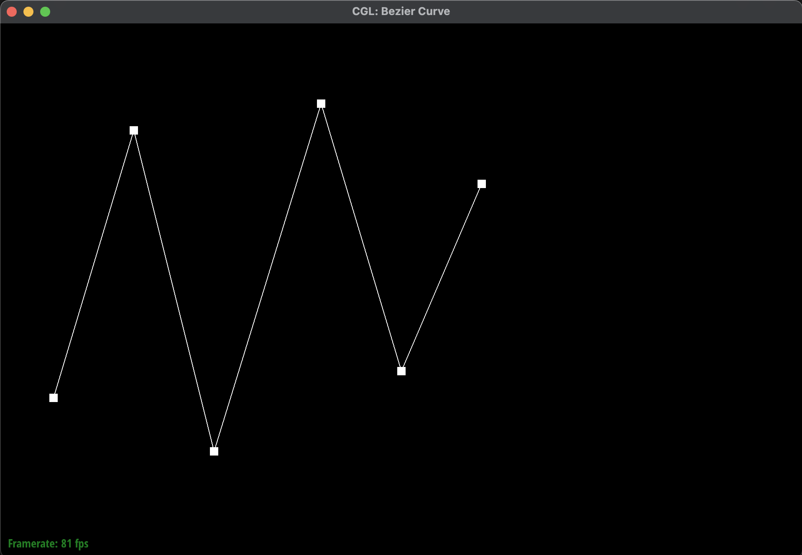 |
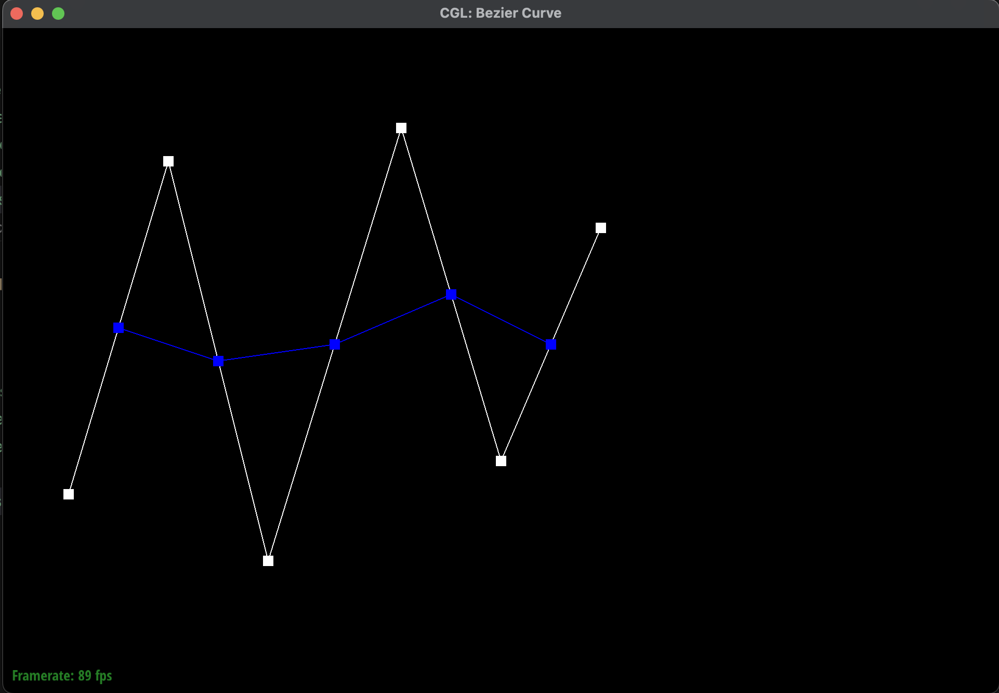 |
|
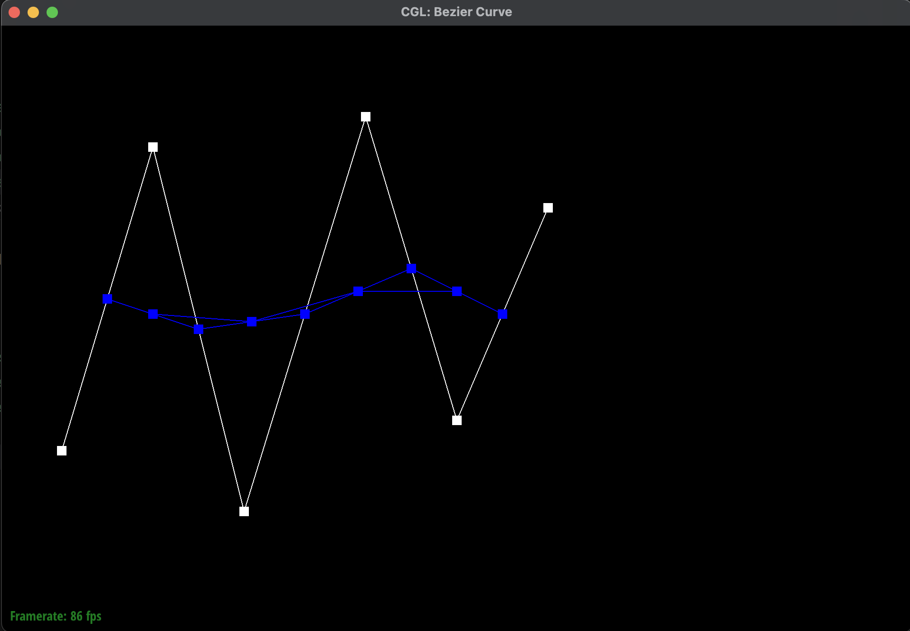 |
|
|
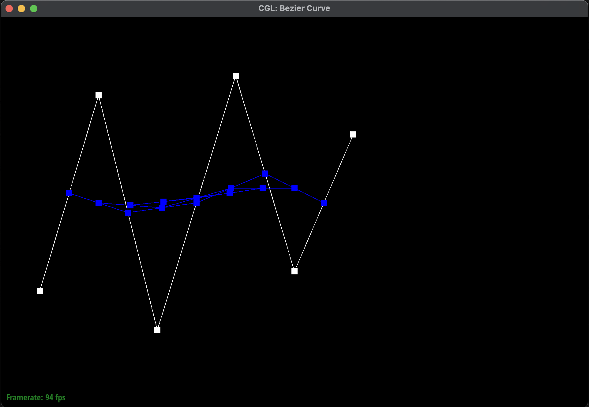 |
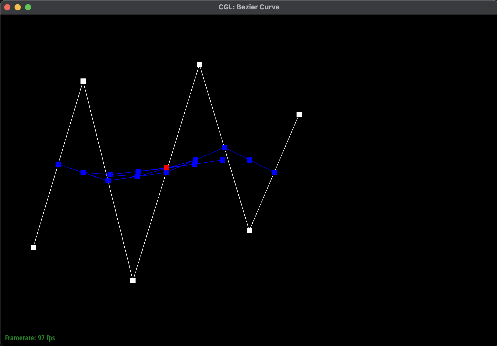 |
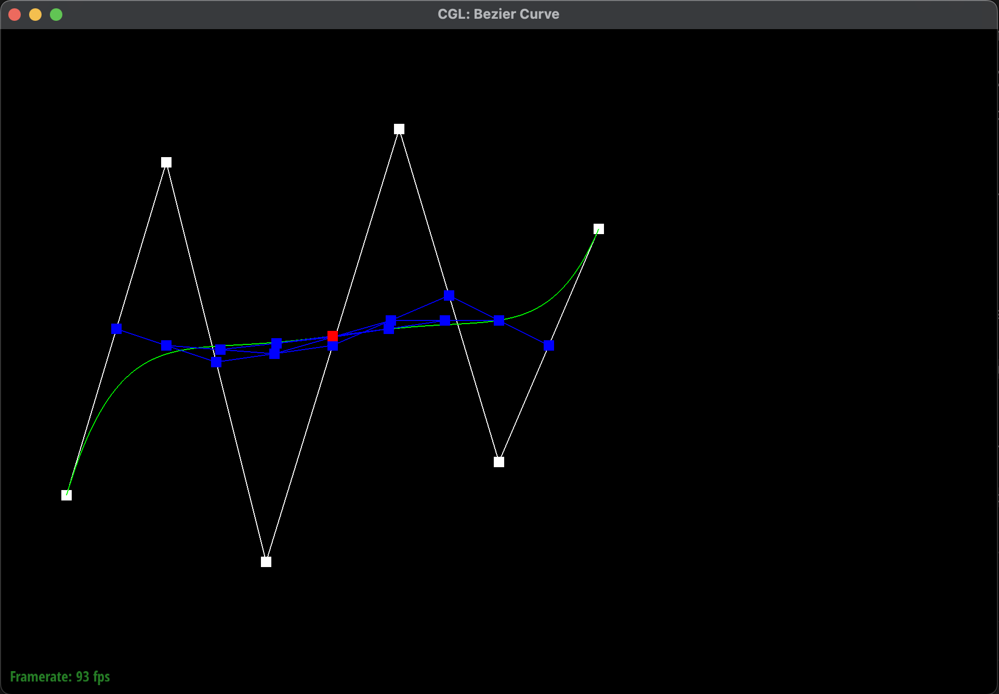
Below we moved a few control points to new positions, giving us a differently shaped curve. We also scrolled to vary the \\( t \\) parameter and show a few screenshots of how the intermediate levels shift accordingly.
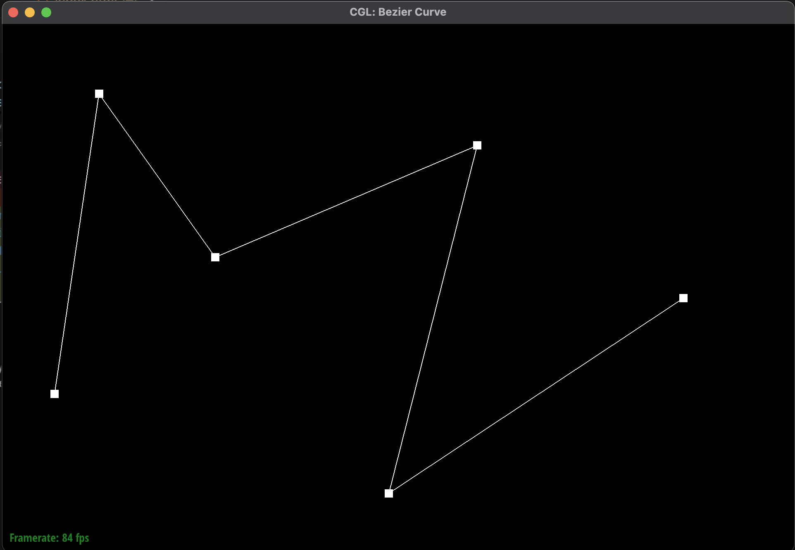
Here are screenshots at different values of \( t \), showing how the intermediate points and final evaluated point move along the curve as we scroll:
|
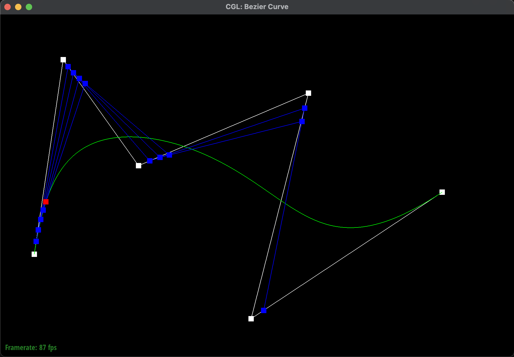 |
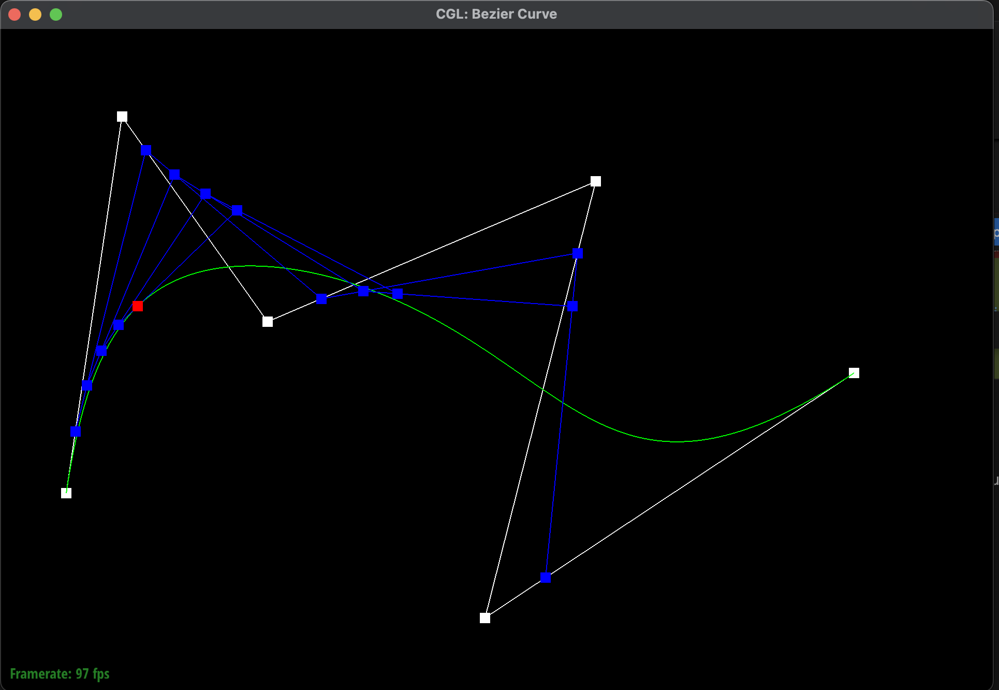 |
|
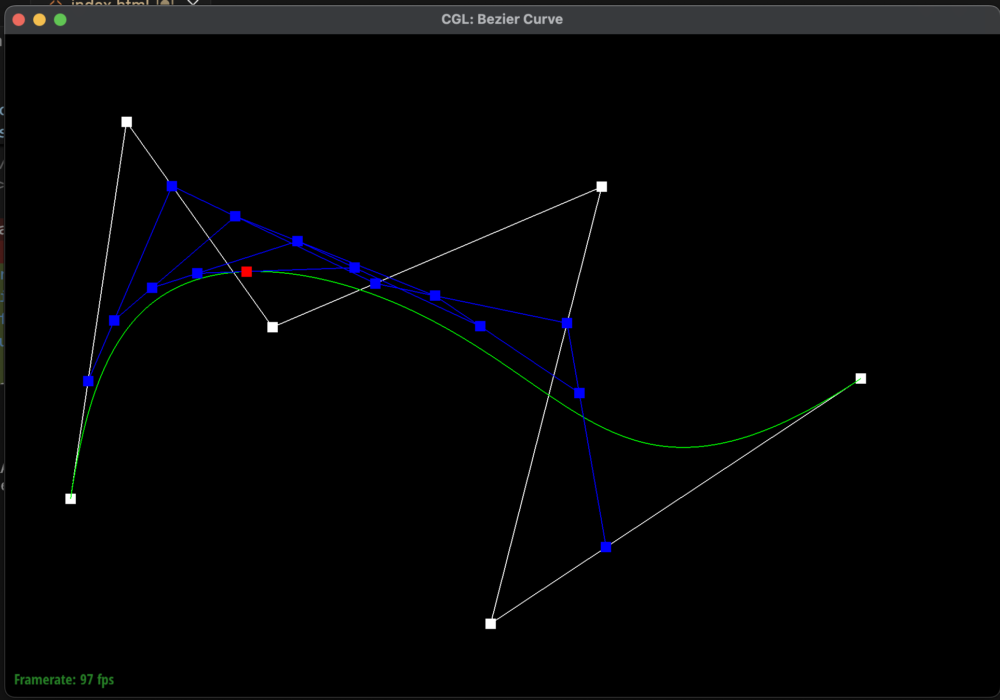 |
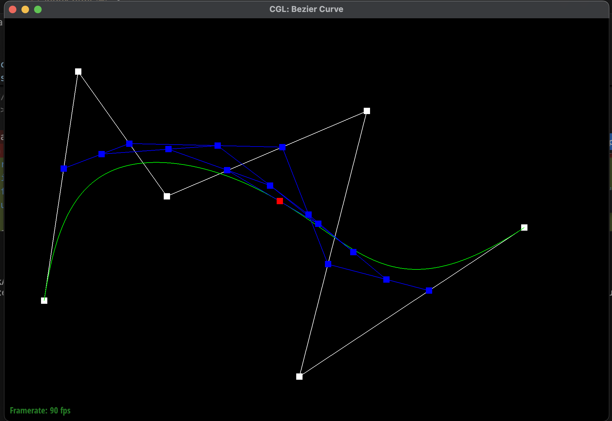 |
|
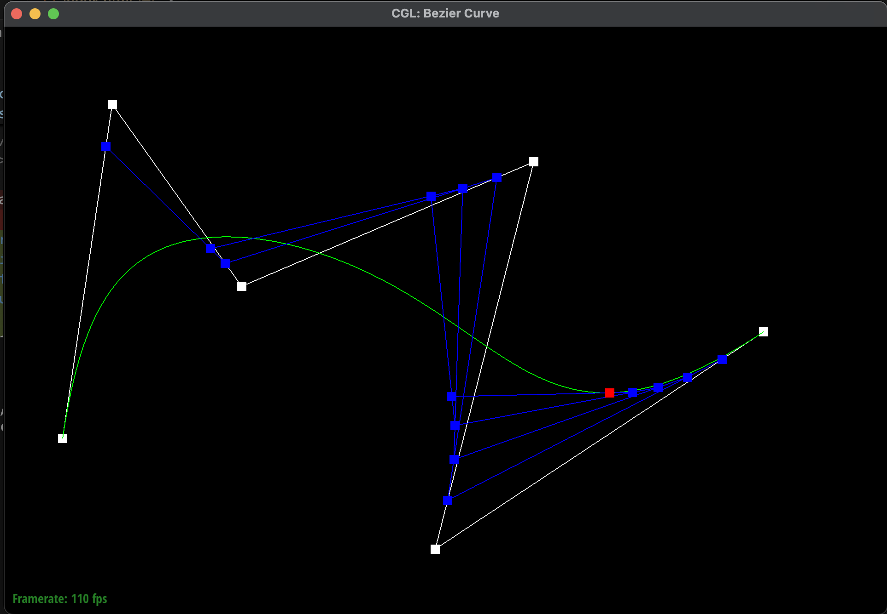 |
|
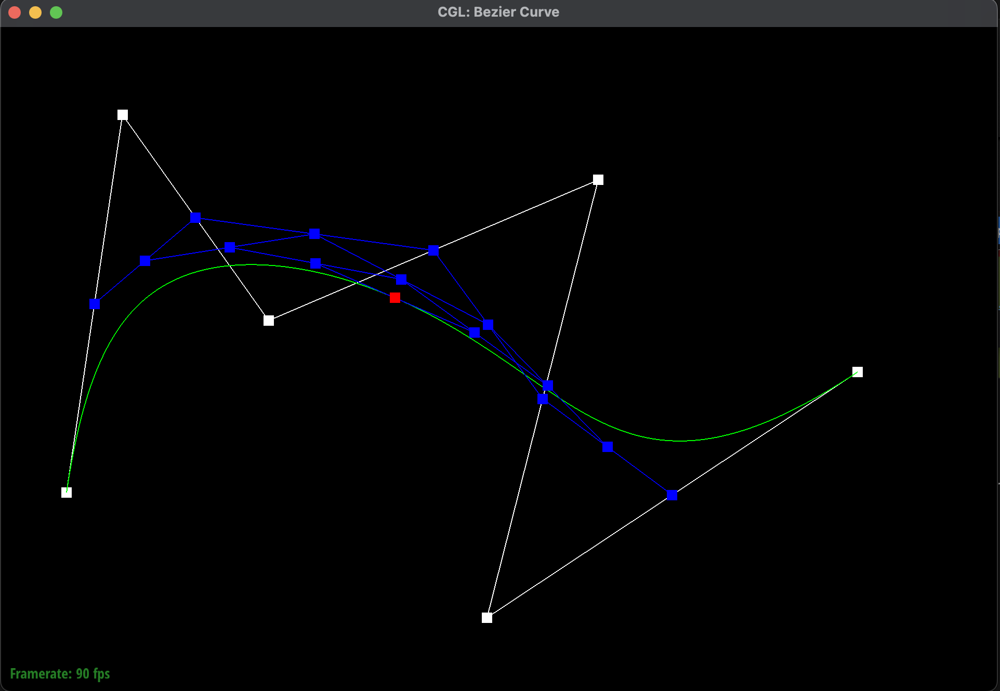
Bezier surfaces are the 2D generalization of Bezier curves. Instead of a 1D list of control points, we now have an \( n \times n \) grid of 3D control points. Additionally, instead of a single parameter \( t \) we have two parameters: \( u \) and \( v \), which both range between 0 to 1. The pair \( (u, v) \) picks out a specific point on the surface.
We can reuse the exact same 1D de Casteljau evaluation from Part 1, just applied in a two-pass method.
In total we're doing \( n + 1 \) independent 1D evaluations: \( n \) for the rows and 1 for the column.
We have three functions that build on each other:
In pseudocode:
function evaluate(u, v):
column_points = empty list
for each row in controlPoints:
point = evaluate1D(row, u)
column_points.append(point)
return evaluate1D(column_points, v)
To verify our implementation, we loaded the teapot defined as Bezier patches in bez/teapot.bez.
The mesh renderer samples the surface at a grid of \( (u, v) \) values, calls our evaluate
function for each sample, and stitches the resulting 3D points into triangles. The resulting teapot
is shown below.
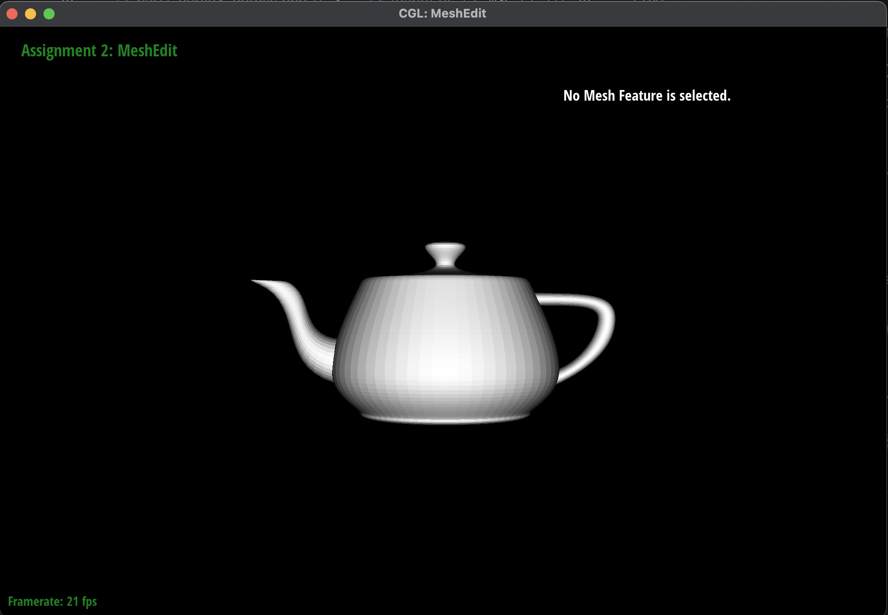
bez/teapot.bez).(To be completed.)
(To be completed.)
(To be completed.)
(To be completed.)
(To be completed.)